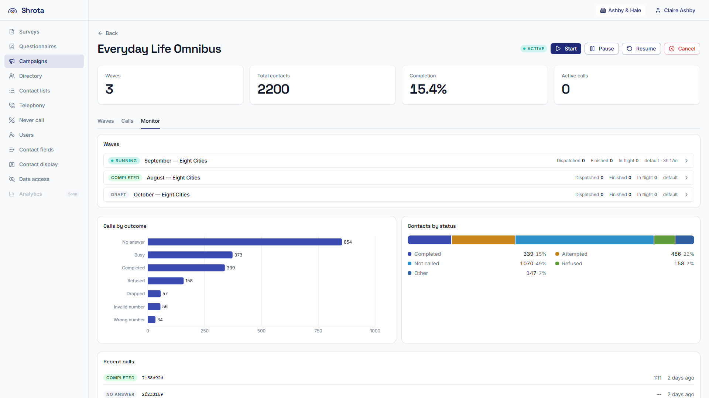

Latest project
Shrota: AI phone surveys
Shrota is an AI-powered CATI (computer-assisted telephone interviewing) platform for running phone surveys in India, in Hindi and other Indian languages. See it live at getaicati.com.
Surveys are designed in a web builder and compiled into LangGraph conversation graphs. An AI interviewer then runs them over real phone calls through LiveKit and SIP.
Studies dial contact lists in waves, with call records, live monitoring and per-call tracing.
Technologies used:
- LangGraph
- LiveKit
- SIP
- Python
- React
- PostgreSQL
- Langfuse
